Brachiosaurus
Uyển Long Hữu Thủ kỷ Jura
Tổng quan
Kỷ
Jurassic
Họ
Brachiosauridae
Chi
Brachiosaurus
Dài
24 m
Cao
14 m
Nặng
43 tấn
Thức ăn

Brachiosaurus là một chi khủng long sauropoda sống cuối kỷ Jura ở thành hệ Morrison của Bắc Mỹ. Trong tiếng Việt, chúng còn được gọi là uyển long. Nó lần đầu tiên được mô tả bởi Elmer S. Riggs vào năm 1903 từ các hóa thạch được tìm thấy trên sông Grand Canyon của phía tây Colorado, Hoa Kỳ.
Nguồn: wikipedia.org
Phân bố
Khu vực Bắc Mỹ, Tây Âu, Bắc và Nam Phi
Thông tin thêm về Brachiosaurus
Kỷ nguyên
Brachiosaurus sống vào cuối kỷ Jura, khoảng từ 155 đến 154 triệu năm trước.
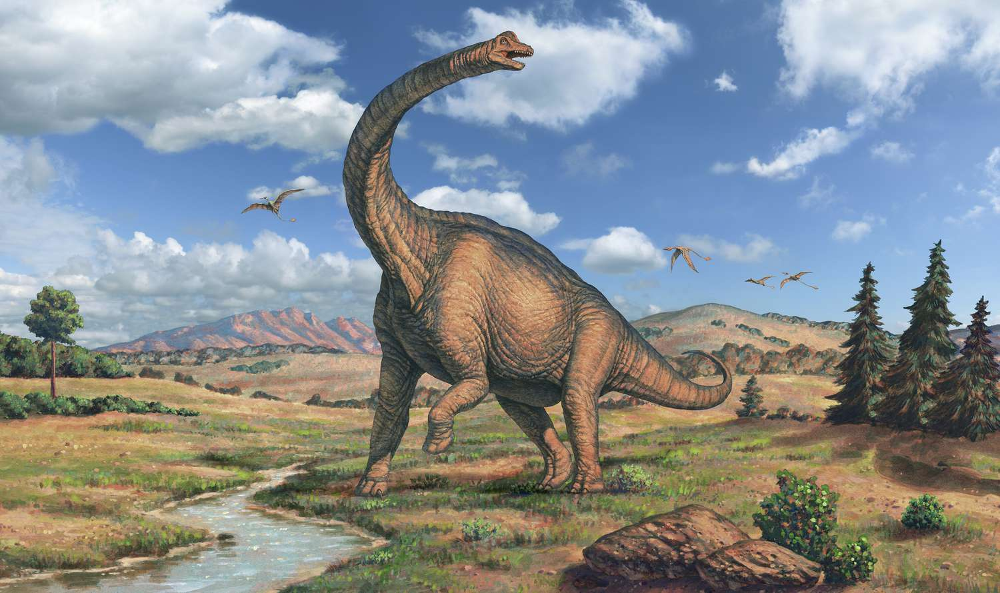Phân bố
Brachiosaurus chủ yếu được phát hiện tại thành hệ địa tầng Morrison, những nơi hiện thuộc Algeria, Bồ Đào Nha, Tanzania, Hoa Kỳ.
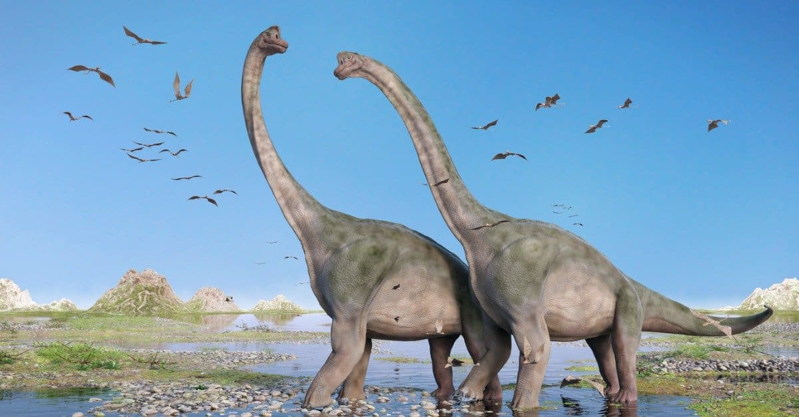Các nhà cổ sinh vật học từng tin rằng Brachiosaurus chủ yếu sống dưới nước, một phần do lỗ mũi của nó nằm ở đỉnh đầu hình quả trứng. Nhưng điều này có thể không chính xác vì một số lý do. Thay vào đó, Brachiosaurus là một loài khủng long sống hoàn toàn trên đất liền và thậm chí chúng chỉ có thể thích nghi ở khu vực đồng bằng vì chúng có kích thước quá cao lớn, không phù hợp với việc di chuyển ở những nơi có địa hình khó khăn như đồi núi, theo một nghiên cứu năm 2014 trên Tạp chí Sinh học Lý thuyết.
Tên khoa học
Được đặt tên bởi nhà cổ sinh vật học Elmer S. Riggs vào năm 1903. Brachiosaurus - "thằn lằn cánh tay", được đặt tên theo tiếng Hy Lạp cổ, trong đó “Brachio” có nghĩa là cánh tay còn “saurus” nghĩa là thằn lằn. Cái tên này có vẻ sẽ gợi cho người đọc về việc cánh tay, hay đúng hơn là hai chi trước của chúng sẽ có những tính năng đặc biệt.
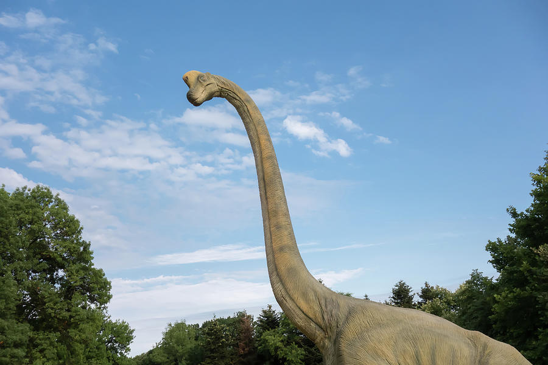Kích thước
Trong nhiều thập kỷ, Brachiosaurus là một trong những con khủng long lớn nhất được biết đến. Chúng một thân hình cao từ 12-16 m, dài khoảng 22 - 26 m (85 feet) và nặng khoảng 28 - 58 tấn.
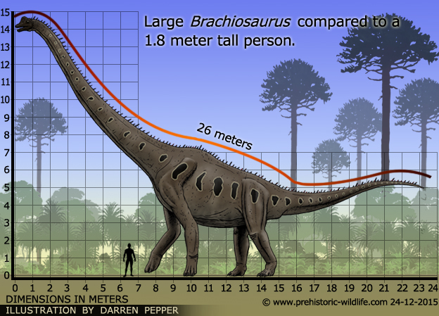Ngoại hình
Brachiosaurus là loài khủng long đi bằng bốn chân hình trụ, cổ dài tương ứng với kích thước, tất cả đều là điển hình với SauropodaTuy nhiên, tỷ lệ cơ thể của Brachiosaurus không giống như hầu hết các sauropoda. Các chi trước dài hơn chi sau, tạo thân hình nghiêng dốc, làm gợi nhớ hình dạng cơ thể tổng thể của hươu cao cổ hiện đại. Ngoài ra, trong khi đuôi sauropoda là điển hình khủng long đuôi dài, đuôi Brachiosaurus khá ngắn.
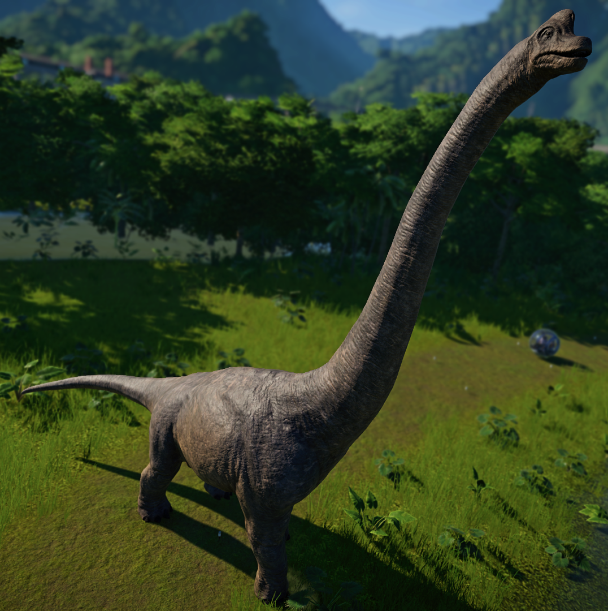Hộp sọ của chúng khá nhỏ so với tổng thể và nổi bật với một số những cái lỗ, có lẽ nhằm giúp giảm trọng lượng. Ngón chân thứ nhất của chân trước và ba ngón đầu của chân sau có vuốt.
Chế độ ăn
Brachiosaurus là một loài động vật ăn thực vật. Loài động vật ăn cỏ đặc biệt cao và dài này lướt qua các ngọn cây, ăn dương xỉ và cây lá kim. Nó có những chiếc răng giống như cái đục để cắt những chiếc lá trên cùng và cành cây. Nó không bao giờ nhai. Thay vào đó, nó nuốt toàn bộ thực vật xuống ruột để tiêu hóa.
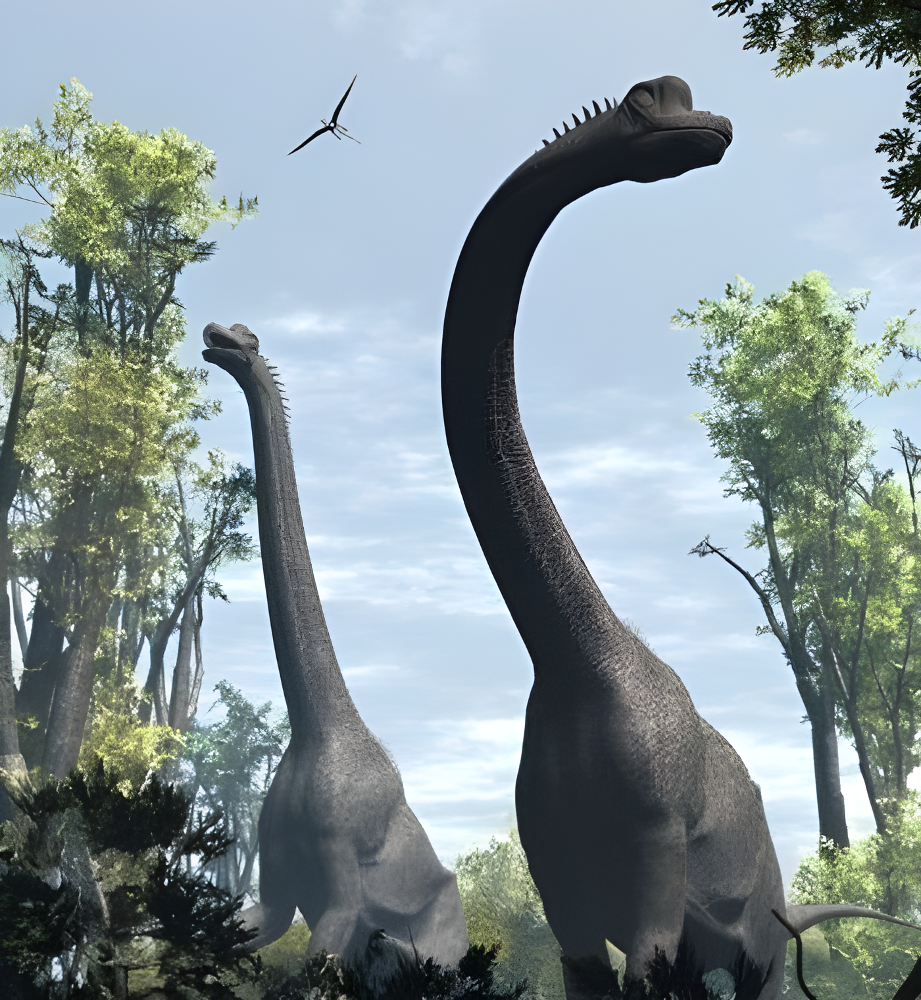Bên cạnh đó, cũng có một số giả thuyết cho rằng thỉnh thoảng những con Khủng long hữu thủ Brachiosaurus này sẽ di chuyển theo cách của một con gấu xám khổng lồ với việc đi lại bằng 2 chân sau còn 2 chân trước sẽ bám vào các cành cây để kiếm thức ăn.
Khám phá
Vào năm 1900, một nhóm thợ săn lùng hóa thạch đến từ Bảo tàng Lịch sử Tự nhiên Field của Chicago đã phát hiện ra một bộ xương khủng long gần như hoàn chỉnh, chỉ thiếu phần hộp sọ của nó ở vùng Fruita phía tây Colorado, Hoa Kỳ. Trưởng đoàn thám hiểm, Elmer Riggs đã đặt tên cho loại hóa thạch Brachiosaurus và đây chính là loài Khủng long hữu thủ Brachiosaurus mà chúng ta biết đến ngày nay.
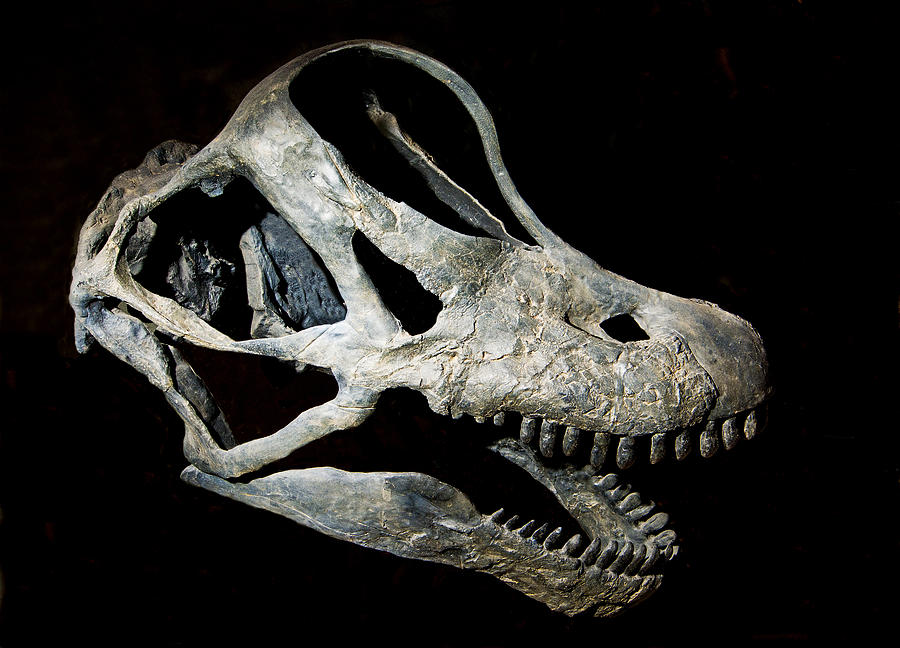Hầu hết các tài liệu hiện nay đều ghi nhận rằng Elmer Riggs là người đầu tiên phát hiện và đặt tên cho loài khủng long này. Tuy nhiên, có một sự thật thú vị rằng vinh dự này đáng lẽ thuộc về nhà cổ sinh vật học nổi tiếng người Mỹ, Othniel C. Marsh, người gần hai thập kỷ trước đã phát hiện ra hộp sọ Brachiosaurus. Nhưng một điều không may mắn là ông lại phân loại sai hộp sọ của chúng và cho rằng hộp sọ đó thuộc về loài Khủng long cổ dài Apatosaurus – một trong những loài họ hàng xa của Khủng long hữu thủ Brachiosaurus.
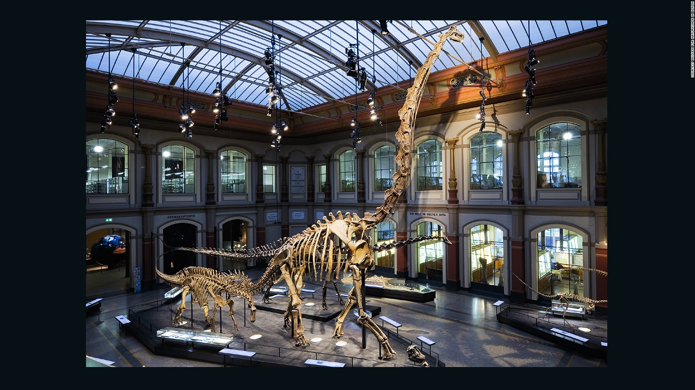Những sự thật thú vị
Theo nhiều nghiên cứu mới đây, có một sự thật được phát hiện ra là Brachiosaurus đã chung sống hòa bình với các loài khủng long khác tại các khu vực đồng bằng ngập nước, đặc biệt là các loài khủng long ăn thực vật bằng cách chỉ tìm kiếm nguồn thức ăn ở những nhánh cây cao nhờ lợi thế thân hình to lớn và chiếc cổ dài, còn các bụi rậm và các nhánh cây thấp sẽ thuộc về những loài khủng long ăn thực vật có hình dáng thấp hơn khác, nhờ hệ tầng sinh thái đa dạng tạo nên nguồn thức ăn dồi dào đủ cho tất cả các loài này.
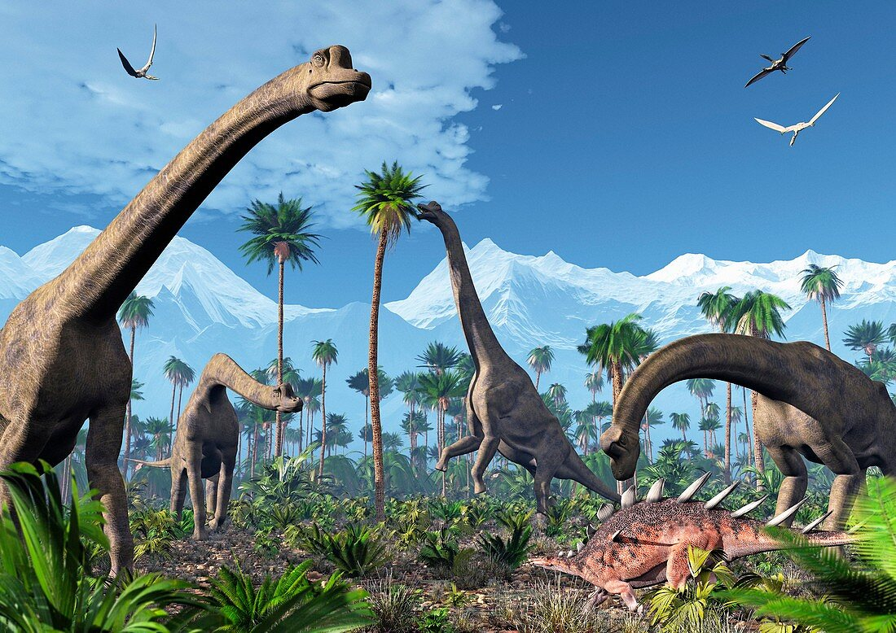Khủng long hữu thủ Brachiosaurus là một trong những loài khủng long quen thuộc nhất trên màn ảnh. Nhắc đến loạt phim về Khủng long, chắc hẳn nhiều bạn sẽ biết đến Khủng long hữu thủ Brachiosaurus là một trong những loài khủng long được xuất hiện nhiều với hình ảnh nhai lá cây một cách yên bình được nhìn thấy từ đằng xa.
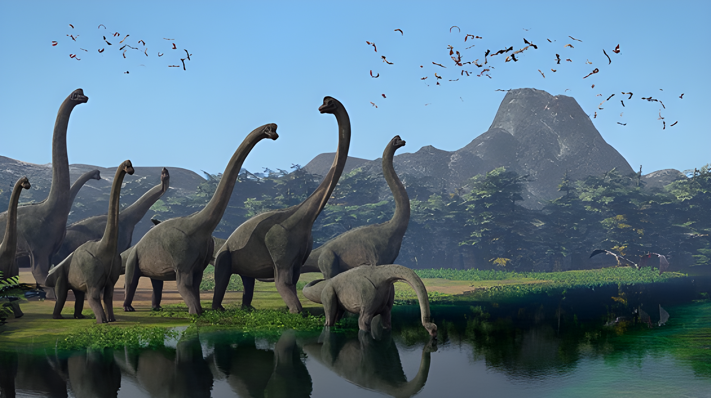